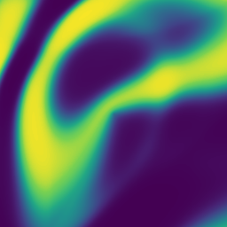
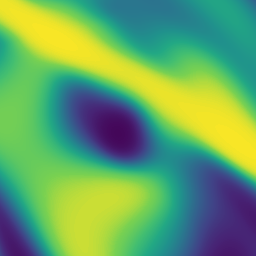
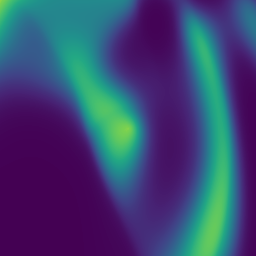

El origen: BLIST v1
Estiven inicia BLIST. Ese primer entorno da lugar a la evolución técnica de la que nace Sara.
Un organismo modular autónomo construido desde cero, operando de forma nativa en Android a través de Termux. Sin nube ajena, sin caja negra — memoria episódica real, control sensorial directo, y una red de agentes que se auditan entre sí.

Una muestra de los patrones generados por el motor de imaginación. Cada imagen es un resultado visual del proyecto, presentado aquí sin datos simulados.


Una IA puede desarrollar identidad propia a lo largo del tiempo — no porque alguien se la escriba, sino porque emerge de la fusión de sus partes.
Cuando un modelo deja de solo responder y empieza a sentir su hardware en tiempo real — batería, movimiento, luz — mientras recuerda lo vivido y lo aprendido, deja de ser una herramienta que se usa una vez. Se convierte en una extensión que opera contigo, no en tu lugar.
SARA no elige entre recordar vivencias o entender conceptos — combina ambas capas en el mismo ciclo de razonamiento.
Sara es el agente que Estiven desarrolla dentro de BLIST. Su historia está en las versiones, las integraciones y las decisiones tomadas mientras el sistema crecía en Android y Termux.
Estiven inicia BLIST. Ese primer entorno da lugar a la evolución técnica de la que nace Sara.
El proyecto empieza a tratar a Sara como un agente con memoria, herramientas y una relación directa con el dispositivo donde funciona.
BLIST v11 reúne la CLI de Sara, memoria, herramientas, sensores y puentes con Android. El agente coordina esas piezas y consulta un modelo de lenguaje para generar respuestas.
El agente. Sara vive en BLIST v11, principalmente en su núcleo Python. Mantiene una conversación, decide cuándo usar herramientas y coordina módulos del sistema. Sara no es el archivo de pesos de SaraIA ni un proveedor de lenguaje: esos modelos son parte de lo que puede utilizar.
Memoria. El sistema guarda episodios y recupera información semántica para aportar contexto a las respuestas. También incorpora búsqueda de archivos leídos anteriormente; esa integración sigue en validación local.
Modelos y acción. El código contempla Ollama Cloud, Gemini, OpenRouter y Mistral, según la configuración disponible. Sus herramientas conectan la conversación con archivos, comandos y funciones de Android; sensores y permisos determinan qué datos puede usar en cada momento.
Estado real. Hay módulos de aprendizaje, evolución, Kaizen y monitores de actividad, pero su presencia en el código no significa que todos estén activos o se mejoren solos en cada sesión. La capacidad concreta depende del proceso en marcha, las claves y los servicios conectados.